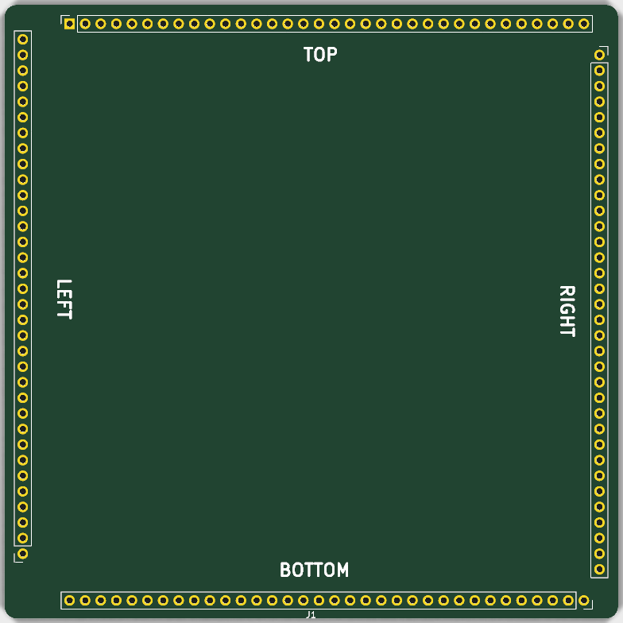

Starting point for a daughterboard that plugs into the nuBoard 68020 FPGA host board. It gives you a 100 × 100 mm outline and the full 4 × 34 mezzanine interface, already placed, footprinted and labelled. Everything inside the connector ring is yours.

Each of the four connector rows carries 34 pins: 27 signals and 7 grounds. Signal labels are <side><bank><bit>, where side is T, B, L or R — for example T00…T07, T10…T17, T20…T27. Each side also has a dedicated clock TCLK/BCLK/LCLK/RCLK and two spares TX, TY (and the equivalents on the other sides).
The mezzanine symbol and footprint ship with the template as a project-local nuBoard library (nuBoard.kicad_sym and nuBoard.pretty, registered through the project's own sym-lib-table and fp-lib-table via ${KIPRJMOD}). Nothing outside the new project directory is required.
Out of the box the schematic reports isolated pin label for every mezzanine signal, because each label reaches only J1 so far. Those clear as you connect the signals you actually use; delete the labels you don't.